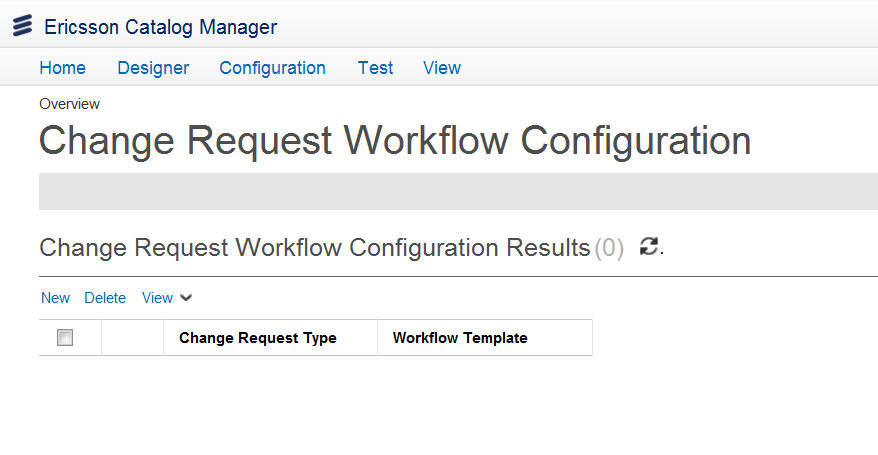

Request Workflow ConfigurationAfter you create a workflow template, you need to associate the change request type with the workflow template. You can access the Request Type Template Configuration option using the Quick Start menu on the Ericsson Catalog Manager home page or from the menu bar by clicking Configuration > Configure PLD > Request Type Template Configuration. You can Add, Delete, or Export the associations.  When you create a workflow task, you must configure templates that require approval from participants. If you create a change request, you need to map all change requests (select the request type and select the workflow), and submit the request for workflow tasks based on the template as these workflow tasks are modifying the state or order to which the request belongs. You must modify the objectLifecycleModify and the getLifecycle scripts to mention what lifecycle is affected. Note: If you want to modify the ordered lifecycle that the request is following, you must define which lifecycle project that Catalog is using. Add a change request assocation with a workflow templateTo associate a new change request workflow with a workflow template, do the following:
Delete a change request assocation with a workflow templateTo delete an association of the change request type with the template, select the checkbox beside the workflow association and click the Delete button. Click the Yes button in the confirmation prompt that appears. Export the list of change request associations with templatesTo export a list of change requests and workflow template associations in the system, click the Export button and choose to export the associations to XLS, to CSV, or to XML format. |